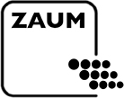

<nav class="navbar navbar-expand-lg navbar-light bg-light">
    <router-link to="/" class="navbar-brand">
        
        PollenScience.eu
    </router-link>

    <button class="navbar-toggler" type="button" data-toggle="collapse" data-target="#navbarSupportedContent"
            aria-controls="navbarSupportedContent" aria-expanded="false" aria-label="Toggle navigation">
        <span class="navbar-toggler-icon"></span>
    </button>

    <div class="collapse navbar-collapse" id="navbarSupportedContent">
        <ul class="navbar-nav mr-auto">
            <li :class="['nav-item', currentPage.includes('aktuell') ? 'active' : '']">
                <router-link to="/aktuell" class="nav-link"><span>{{t('component.nav.current')}}</span></router-link>
            </li>
            <li :class="['nav-item', currentPage.includes('historie') ? 'active' : '']">
                <router-link to="/historie" class="nav-link"><span>{{t('component.nav.historic')}}</span></router-link>
            </li>
            <li :class="['nav-item', currentPage.includes('statistik') ? 'active' : '']">
                <router-link to="/statistik" class="nav-link"><span>{{t('component.nav.statistics')}}</span></router-link>
            </li>
            <li :class="['nav-item', currentPage.includes('hintergrund') ? 'active' : '']">
                <router-link to="/hintergrund" class="nav-link"><span>{{t('component.nav.background')}}</span></router-link>
            </li>
            <li :class="['nav-item', currentPage.includes('impressum') ? 'active' : '']">
                <router-link to="/impressum" class="nav-link"><span>{{t('component.nav.imprint')}}</span></router-link>
            </li>
            <li :class="['nav-item', currentPage.includes('rulesAndNotifications') ? 'active' : '']">
                <router-link to="/regeln-und-benachrichtigungen" class="nav-link"><span>{{t('component.nav.rulesAndNotifications')}}</span></router-link>
            </li>
        </ul>
    </div>

    <div class="nav navbar-nav language">
        <span @click="setLanguage('de')" class="ml-2 mr-2">DE</span>|
        <span @click="setLanguage('en')" class="ml-2 mr-2">EN</span>|
        <span @click="setLanguage('nl')" class="ml-2 mr-2">NL</span>|
        <span @click="setLanguage('es')" class="ml-2 mr-2">ES</span>|
        <span @click="setLanguage('fr')" class="ml-2 mr-2">FR</span>
    </div>

    <div>
        <ul class="nav navbar-nav navbar-right">
            <li v-if="!secured"><a :href="'/s?lang=' + locale"><span>{{t('component.nav.login')}}</span></a></li>
            <li v-if="secured"><a href="#" @click="logout"><span>{{t('component.nav.logout')}}</span></a></li>
        </ul>
    </div>
</nav>
